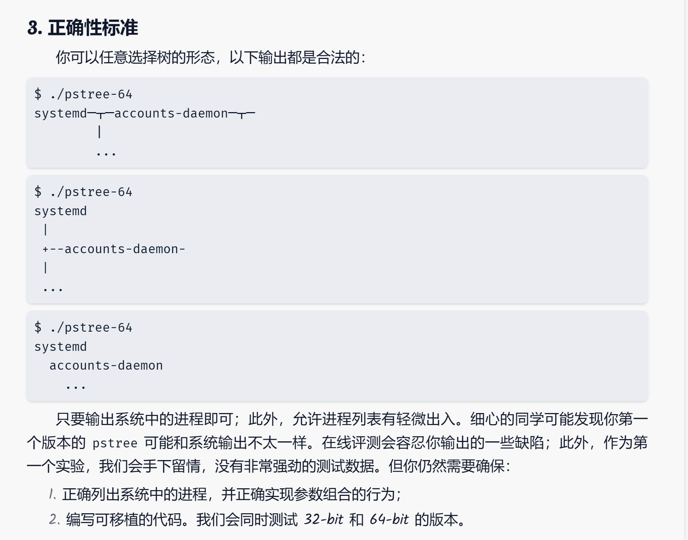
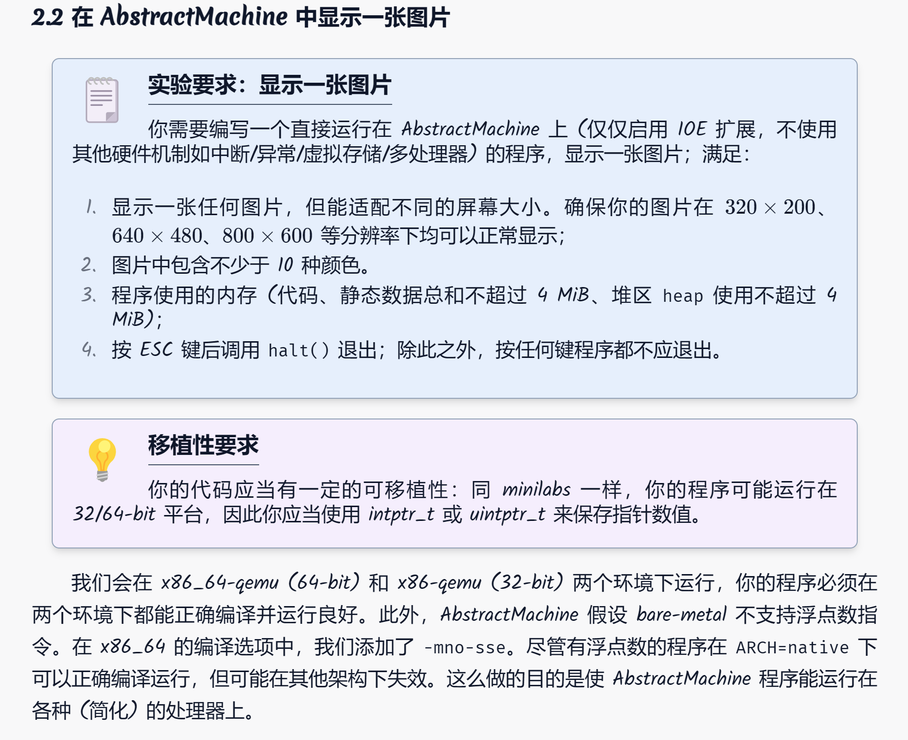
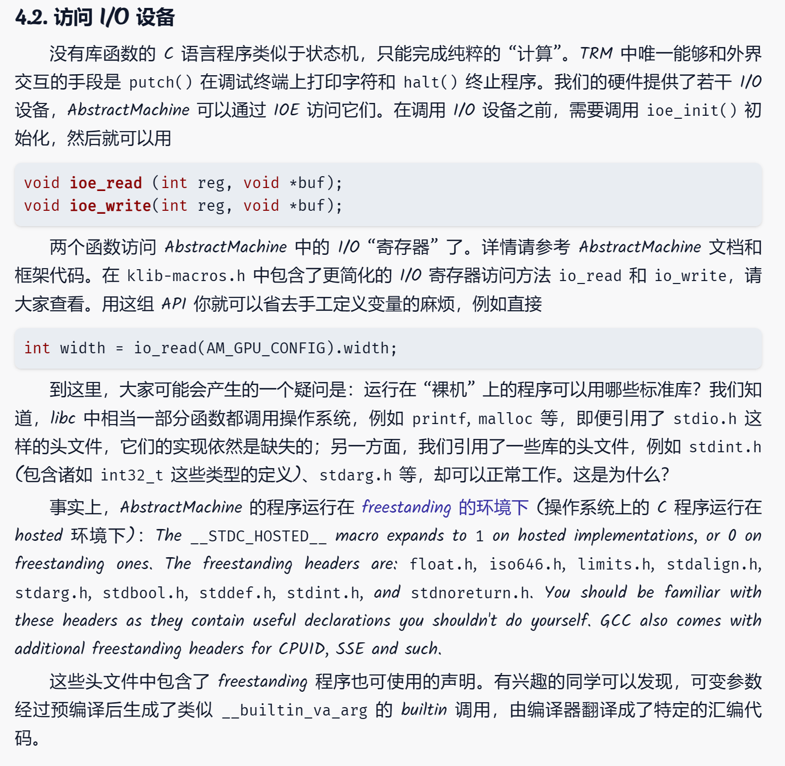
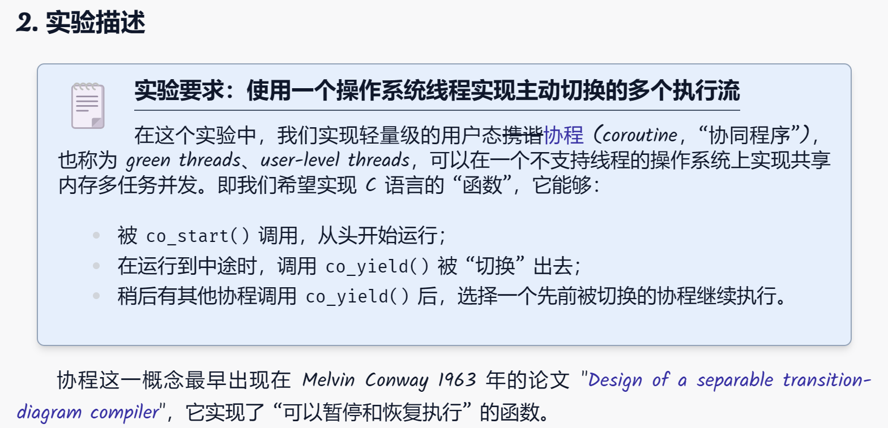
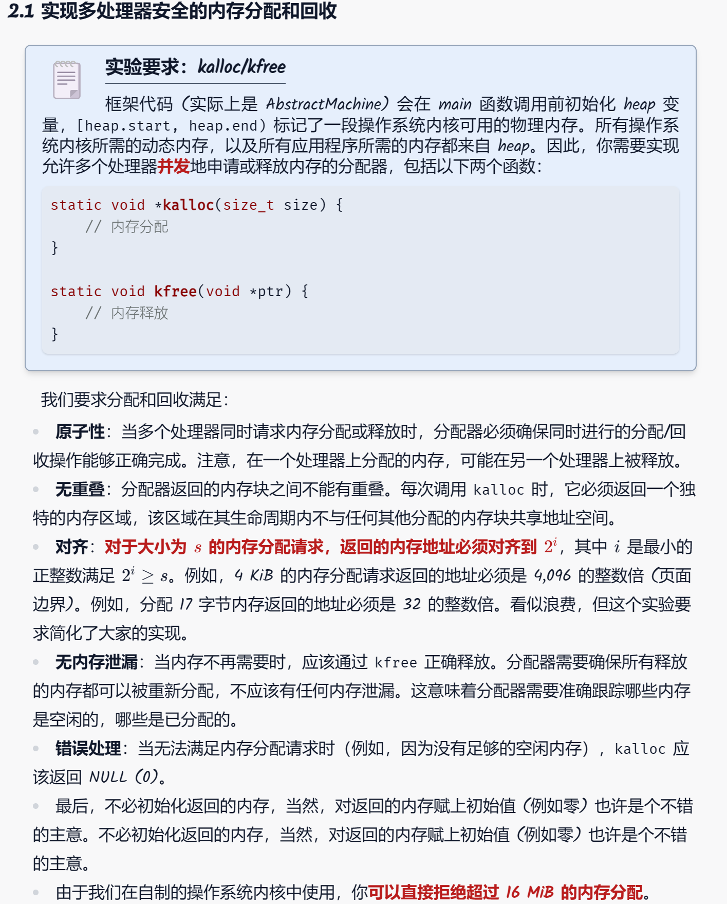

OS lab 
总体思路按照实验指南：
得到命令行的参数，根据要求设置标志变量的数值；
得到系统中所有进程的编号 (每个进程都会有唯一的编号) 保存到列表里；
对列表里的每个编号，得到它的的父亲是谁；
在内存中把树建好，按命令行参数要求排序；
把树打印到终端上。
1. 得到命令行的参数
c可以在main入口函数中得到命令行参数，这里的参数是一个字符串数组，每个字符串是一个参数，由空格分隔。于是遍历这些参数，并转化成我们需要的标志变量。
1 2 3 4 5 6 7 8 9 10 11 12 13 14 15 16 17 18 19 20 21 22 23 24 25 26 27 28 29 30 31 32 33 34 35 36 37 38 39 40 41 42 43 44 45 46 47 48 int main (int argc, char *argv[]) for (int i = 0 ; i < argc; i++) { assert(argv[i]); if (argv[i][0 ] == '-' && argv[i][1 ] == '-' ) { char *p = argv[i]; if (strcmp (p + 2 , "show-pids" ) == 0 ) { arg_p = true ; } else if (strcmp (p + 2 , "numeric-sort" ) == 0 ) { arg_n = true ; if (i==argc-1 ){ id = 1 ; continue ; } if (argv[i + 1 ][0 ] == '-' ) { id = 1 ; } else { id = strtol(argv[i + 1 ], NULL , 10 ); i++; } } else if (strcmp (p + 2 , "version" ) == 0 ) { arg_v = true ; } } else { if (argv[i][0 ] == '-' ) { if (argv[i][1 ] == 'p' ) { arg_p = true ; } else if (argv[i][1 ] == 'n' ) { arg_n = true ; if (i==argc-1 ){ id = 1 ; continue ; } if (argv[i + 1 ][0 ] == '-' ) { id = 1 ; } else { id = strtol(argv[i + 1 ], NULL , 10 ); i++; } } else if (argv[i][1 ] == 'V' ) { arg_v = true ; } } } } assert(!argv[argc]);
2. 得到系统中所有进程的编号
需要在c中完成文件读写，查找。
最关键的遍历文件操作：
1 while ((entry = readdir(dir)) != NULL )
这一行代码是在一个循环中，它使用 readdir() 函数来逐个读取从 opendir() 打开的目录流中的目录条目。这个循环会一直进行，直到 readdir() 返回 NULL，表示目录中没有更多的条目可读取了。下面详细解释这段代码的工作原理和各个组成部分：
工作原理
readdir() 函数
readdir() 用于从指定的目录流（在这种情况下是由 opendir() 打开的 /proc 目录）中读取一个目录条目。每次调用 readdir() 时，它都会读取目录流中的下一个条目，并返回一个指向 struct dirent 结构的指针。这个结构包含了目录条目的详细信息，如条目的名称 (d_name) 和类型 (d_type)。
当目录中没有更多条目可读时，readdir() 将返回 NULL。
while ((entry = readdir(dir)) != NULL)
这个 while 循环通过不断调用 readdir() 来遍历目录中的所有条目。
在每次循环迭代中，readdir() 读取下一个条目并将结果赋值给变量 entry。
循环条件检查 readdir() 的返回值是否为 NULL。如果不是 NULL，表示成功读取到一个条目，循环继续；如果是 NULL，表示已经没有更多条目可读，循环结束。
1 2 3 4 5 6 7 8 9 10 11 12 13 14 15 16 17 DIR *dir; struct dirent *entry ;dir = opendir("/proc" ); if (dir == NULL ) { perror("opendir" ); return EXIT_FAILURE; } while ((entry = readdir(dir)) != NULL ) { if (entry->d_type == DT_DIR && strspn (entry->d_name, "0123456789" ) == strlen (entry->d_name)) { Getinfo(entry->d_name); } } closedir(dir);
这样一来，可以检测在/proc文件夹里面，有多少数字组成的文件夹，并调用Getinfo函数处理每个进程目录。
3. 对列表里的每个编号，得到这个进程的相关信息
这里的关键是读取文件，然后解析文件，这里是解析/proc/[pid]/status文件。
1 2 3 4 5 6 7 8 9 10 11 12 13 14 15 16 17 18 19 20 21 22 23 24 25 26 27 28 29 30 31 32 33 34 35 36 37 38 39 40 41 42 43 44 45 46 47 48 49 50 void Getinfo (const char *pid) { char path[256 ]; FILE *fp; char line[256 ]; snprintf (path, sizeof (path), "/proc/%s/status" , pid); fp = fopen(path, "r" ); if (fp == NULL ) { perror("fopen" ); return ; } tot++; while (fgets(line, sizeof (line), fp)) { if (strncmp (line, "PPid:" , 5 ) == 0 ) { a[tot].fa = strtol(line + 6 , NULL , 10 ); a[tot].pid = strtol(pid, NULL , 10 ); a[tot].isthread = false ; } else if (strncmp (line, "Name:" , 5 ) == 0 ) { line[strcspn (line, "\n" )] = 0 ; strcpy (a[tot].name, line + 6 ); } } fclose(fp); GetThreadInfo(pid, a[tot].name); }
以下是解析/proc/[pid]/task文件，也就是解析进程的子线程信息。
1 2 3 4 5 6 7 8 9 10 11 12 13 14 15 16 17 18 19 20 21 22 23 24 25 26 27 28 29 30 31 32 33 34 35 36 37 38 39 40 41 42 void GetThreadInfo (const char *pid, const char *faname) { char taskPath[512 ]; snprintf (taskPath, sizeof (taskPath), "/proc/%s/task" , pid); DIR *dir = opendir(taskPath); if (dir == NULL ) { perror("opendir" ); return ; } struct dirent *entry ; while ((entry = readdir(dir)) != NULL ) { if (strcmp (entry->d_name, "." ) == 0 || strcmp (entry->d_name, ".." ) == 0 ) { continue ; } char threadPath[512 ]; snprintf (threadPath, sizeof (threadPath), "/proc/%s/task/%s/status" , pid, entry->d_name); if (strcmp (pid, entry->d_name) == 0 ) continue ; ++tot; a[tot].pid = strtol(entry->d_name, NULL , 10 ); a[tot].fa = strtol(pid, NULL , 10 ); snprintf (a[tot].name, strlen (faname) + 2 + 1 , "{%s}" , faname); a[tot].isthread = true ; } closedir(dir); }
都需要标记好自己的name，父进程的pid，自己的pid，是否是线程等信息。
接下来就是喜闻乐见的根据信息建树，然后打印树，没什么含金量，就不拓展开说了。
另外再补充一下，-v打印信息默认是打印到标准错误流里。
GPT对其的一些的一些介绍：
打印至stderr
在 C 语言中，fprintf() 是一个标准库函数，用于向指定的输出流写入格式化的字符串。在 fprintf(stderr, "xxxx"); 这个函数调用中，它向 stderr（标准错误流）输出一个字符串。
解析 fprintf(stderr, "xxxx");
使用场景
使用 fprintf() 将错误信息写入 stderr 在编程中非常常见，特别是在需要对错误处理和正常输出进行区分的情况下。通过将错误信息发送到 stderr，可以：
使错误信息脱离正常输出 ：有时候，正常输出（如数据处理结果）可能会被重定向到文件或其他设备。将错误信息发送到 stderr 确保这些消息仍然能够显示在屏幕上或记录到错误日志中。
立即反馈 ：由于 stderr 通常是未缓冲的，错误信息可以立即显示给用户，不需要等待输出缓冲区被填满。
调试与日志记录 ：在开发过程中或生产环境中跟踪问题时，能够清晰地看到错误信息非常关键。
示例代码
下面是一个更实际的使用示例，其中包含了格式化的输出：
1 2 3 4 5 6 7 #include <stdio.h> int main () { int errorCode = 404 ; fprintf (stderr , "Error: Failed to open the file. Code %d\n" , errorCode); return 1 ; }
在这个例子中，如果打开文件失败，程序会向 stderr 输出一个包含错误代码的消息，并返回错误代码 1。
结论
fprintf(stderr, "xxxx"); 是一个简单而强大的方式，用于在 C 程序中处理和报告错误。它利用 stderr 的优势，即即使在输出重定向的情况下，也能确保错误信息的可见性和即时性。
最终在pstree目录，make一下，然后运行./pstree32 --show-pids --numeric-sort --version，就可以看到效果了。
L0: 为计算机硬件编程

本次作业的任务是在Abstract Machine上打印图片。
我们目前没有任何库，输出方式只有在Abstract Machine提供的：(意味着整数/指针的打印得自己实现printf)
事实上，裸机编程过程中，我们缺少了打量库函数：

通过:
1 2 void ioe_read (int reg, void *buf) ;void ioe_write (int reg, void *buf) ;
访问IO设备寄存器，比如打印图片所必须得屏幕长宽带大小。
1 2 3 4 AM_GPU_CONFIG_T info = {0 }; ioe_read(AM_GPU_CONFIG, &info); w = info.width; h = info.height;
把图片转化为数组形式，直接include<OS_lab/image.h>暴力把图片数据导进来。
1 2 3 4 5 6 7 8 9 10 11 12 13 14 15 16 uint32_t OS_lab/image[] = { 0x906B5C , 0x906B5C , 0x926D5D , 0x956F5F , 0x987160 , 0x9B7461 , 0xA07562 , 0xA47865 , 0xA87A66 , 0xAD7E68 , 0xB1806A , 0xB5826B , 0xB9856C , ...........
1 2 #include "OS_lab/image.h"
至于如何把图片变成数组，请右转python万能脚本。
绘制图片
所幸这一步下发的文件给了示例，直接改api就可以了。
1 2 3 4 5 6 7 8 9 10 11 12 13 14 15 16 17 18 19 20 21 22 23 24 25 26 27 28 29 30 31 32 33 static void draw_tile (int x, int y, int w, int h, uint32_t color) { uint32_t pixels[w * h]; AM_GPU_FBDRAW_T event = { .x = x, .y = y, .w = w, .h = h, .sync = 1 , .pixels = pixels, }; for (int i = 0 ; i < w * h; i++) { pixels[i] = color; } ioe_write(AM_GPU_FBDRAW, &event); } void splash () { AM_GPU_CONFIG_T info = {0 }; ioe_read(AM_GPU_CONFIG, &info); w = info.width; h = info.height; for (int x = 0 ; x * SIDE <= w; x++) { for (int y = 0 ; y * SIDE <= h; y++) { if ((x & 1 ) ^ (y & 1 )) { draw_tile(x * SIDE, y * SIDE, SIDE, SIDE, 0xffffff ); } } } }
这是示例代码，打印了全白的图片。
我们把SIDE设置为1，就可以调用其一个个打印像素点。
1 2 3 4 5 6 7 8 9 10 11 12 13 14 15 16 17 18 19 void print_image () { AM_GPU_CONFIG_T info = {0 }; ioe_read(AM_GPU_CONFIG, &info); w = info.width; h = info.height; for (int y = 0 ; y < h; y++) for (int x = 0 ; x < w; x++) draw_tile(x, y, 1 , 1 , OS_lab/image[Getid(477 ,337 ,x,y)]); }
这里477和337是图片本身的width和length。
适应不同屏幕
等比例缩放，取最近像素就可以了。
1 2 3 4 5 int Getid (int W,int H,int x,int y) { int X = x * W / w; int Y = y * H / h; return Y * W + X; }
最后在main中打印图片，并设置键盘事件。
1 2 3 4 5 6 7 8 9 10 11 12 13 14 15 16 17 18 19 20 21 22 23 24 25 26 27 int main (const char *args) { ioe_init(); print_image(); puts ("Press any key to see its key code...\n" ); while (1 ) { AM_INPUT_KEYBRD_T event = {.keycode = AM_KEY_NONE}; ioe_read(AM_INPUT_KEYBRD, &event); if (event.keycode != AM_KEY_NONE && event.keydown) { puts ("Key pressed: " ); puts (key_names[event.keycode]); puts ("\n" ); if (event.keycode == AM_KEY_ESCAPE) { halt(0 ); } } } return 0 ; }
总结一下，本次实验的c程序由于是在裸机上跑，实际上功能只是状态机的跳转，一些常见的syscall还得自己实现。
本次实验涉及的syscall，用了写好的putch输出字符，ioe_read和ioe_write读写io设备，还有AM_GPU_CONFIG_T和AM_GPU_FBDRAW_T来读取屏幕信息和绘制像素点。最后halt(0)终止程序。

我们需要实现协程库 co.h 中定义的 API：
1 2 3 struct co *co_start (const char *name, void (*func)(void *), void *arg) ;void co_yield () ;void co_wait (struct co *co) ;
我们分析一下要求，co_start是创建一个协程，co_yield是让出cpu，co_wait是等待一个协程结束。
所以我们的c程序需要实现一个协程调度器，能够存储所有的协程，然后根据调度策略，调度协程。
调度协程这里是一个难点，我们需要上下文切换，关键在于协程切换使用了 ucontext API，这允许在不同协程间保存和恢复执行状态，包括寄存器和堆栈。
定义协程
1 2 3 4 5 6 7 8 9 10 11 12 #define STACK_SIZE 1024 * 64 typedef struct co { ucontext_t context; char stack [STACK_SIZE]; void (*func)(void *); void *arg; struct co *next ; char *name; int finished; int id; } co_t ;
初始化协程
1 2 3 4 5 6 7 8 9 10 11 12 13 14 15 16 17 18 19 20 21 22 23 24 25 void co_init () { if (co_initialized) return ; srand(time(NULL )); co_initialized = 1 ; co_t *main_co = (co_t *)malloc (sizeof (co_t )); getcontext(&main_co->context); main_co->stack [0 ] = '\0' ; main_co->func = NULL ; main_co->arg = NULL ; main_co->name = strdup("main_co" ); main_co->finished = 0 ; main_co->id = co_count++; main_co->next = co_head; co_head = main_co; co_current = main_co; }
执行协程
1 2 3 4 5 6 7 8 9 10 11 12 13 14 15 16 17 18 19 20 21 22 23 24 25 26 27 28 29 30 31 32 33 34 35 36 37 38 39 40 41 42 43 44 45 static void co_entry (co_t *co) { co->func(co->arg); co->finished = 1 ; co_yield (); } struct co *co_start (const char *name, void (*func)(void *), void *arg) { co_init(); co_t *co = (co_t *)malloc (sizeof (co_t )); getcontext(&co->context); co->context.uc_stack.ss_sp = co->stack ; co->context.uc_stack.ss_size = sizeof (co->stack ); co->context.uc_link = NULL ; co->func = func; co->arg = arg; co->name = strdup(name); co->finished = 0 ; co->id = co_count++; co->next = co_head; co_head = co; makecontext(&co->context, (void (*)())co_entry, 1 , co); return co; }
等待协程
1 2 3 4 5 6 7 8 9 10 11 12 13 14 15 16 17 18 19 20 21 22 23 24 25 26 27 28 void co_wait (struct co *co) { while (!co->finished) { co_yield(); } co_t **p = &co_head; while (*p && *p != co) { p = &(*p)->next; } if (*p) { *p = co->next; } if (co->name) { free (co->name); } free (co); }
切换协程
1 2 3 4 5 6 7 8 9 10 11 12 13 14 15 16 17 18 19 20 21 22 23 24 25 26 27 28 29 30 31 32 33 34 35 36 37 void co_yield () { if (!co_head || !co_initialized) return ; int count = 0 ; co_t *temp = co_head; while (temp) { if (!temp->finished){ count++; } temp = temp->next; } if (count == 0 ) return ; int chosen = rand() % count; co_t *selected = co_head; while (selected && (selected->finished || chosen-- > 0 )) { selected = selected->next; } if (selected != co_current) { co_t *prev = co_current; co_current = selected; swapcontext(&prev->context, &selected->context); } }
我们对核心api：ucontext做一点深入的解释：
ucontext
ucontext 结构体是 POSIX 标准中定义的一种数据类型，用于表示某个线程或协程的执行上下文。这个上下文包括了程序运行所需的几乎所有信息，使得系统可以在某个特定点暂停程序的执行，并在之后某个时刻恢复执行。具体来说，ucontext 包含以下关键信息：
1. 寄存器状态
ucontext 结构体中包含了一系列寄存器的状态，这些寄存器包括：
通用寄存器 ：如程序计数器（PC）、堆栈指针（SP）、基指针（BP）和其他依赖于具体硬件架构的寄存器。程序计数器 ：存储了程序下一条指令的地址，即当前正在执行的代码位置。状态寄存器 ：包含了影响处理器状态和操作的各种标志位。
2. 信号掩码
ucontext 包含了一个信号掩码，这是一个用于指定在当前上下文中哪些信号被阻塞（不被处理）的位掩码。通过控制信号的处理，可以避免在危险的操作过程中被信号中断，从而增加程序的稳定性和安全性。
3. 栈信息
包含了当前上下文使用的堆栈的信息，这对于协程或线程的操作至关重要。它允许上下文在恢复执行时，能够使用和暂停时相同的数据和局部变量。具体包括：
堆栈指针 （ss_sp）：指向堆栈的开始位置。堆栈大小 （ss_size）：堆栈的总大小。
4. 链接到其他上下文
ucontext 结构体可能会包含一个指向另一个 ucontext 的指针（uc_link），当当前上下文终止时，控制权可以自动传递到这个链接的上下文。这在实现协程切换和函数的嵌套调用中非常有用。
代码示例
在C语言中，ucontext 结构的使用通常如下：
1 2 3 4 5 6 7 8 9 10 11 12 13 14 #include <ucontext.h> ucontext_t context;getcontext(&context); context.uc_stack.ss_sp = malloc (STACK_SIZE); context.uc_stack.ss_size = STACK_SIZE; context.uc_link = NULL ; makecontext(&context, function, args_count, ...);
ucontext总结
ucontext 提供了一种机制，通过保存和恢复执行上下文，使得开发者可以实现复杂的控制流变化，如用户级线程（协程）的实现和非局部跳转。它是进行低级并发编程时一个非常强大的工具，尽管它的使用可能比较复杂且依赖于操作系统的支持。
总结
至此，我们就实现了一个简单的协程库。

题目给定了一段堆空间，要求我们在多处理器下实现内存的malloc和free。
首先分析一下我们需要什么？
我们需要一个数据结构来管理内存，知道哪些内存可以用，哪些正在被占用。
数据结构可以支持添加，删除一段区间。
可以支持快高效率并发。注意：这里高效并发定义在当前workload下，即以小数据或者4k页数据居多。
代解决的问题
数据结构需要内存，栈区被题目ban掉了，堆区是我们正在实现的功能。所以如何分配数据给数据结构成了一个难题。
数据结构需要高效并发，这里我们可以使用锁，但是如何使用锁以及如何保证数据结构在锁上高效成了问题。
一些可行的思路
1.线段树
使用线段树，每个叶子节点是4k的内存，对于不满4k的内存分配，再对叶子开一个链表，记录可用空间。
每个cpu指定线段树的一段区间，避免频繁的使用锁。
需要大内存分配时，再对线段树上全局锁，并查询可用内存。并标记被占用的cpu专属内存。
2.对2 i 2^i 2 i
对于2 i 2^i 2 i 2 i 2^i 2 i
这样我们可以用一个类似生产者消费者模型，每个cpu要取内存，从特定size的list中拿锁。
free时，直接把内存放回对应的list中。
3. cpu专属内存配大内存list锁
对于每个cpu，分配专属内存（每一块4k），需要用直接取。
对于大内存，需要对全局list加锁。（这一部分内存占总堆的1 3 \frac{1}{3} 3 1
4. 多个list
粗暴一点，把堆内存分成很多块，每一块一把锁，cpu需要内存时随机抽一个list获得锁并检查有无可用的free内存块。
我选择了方法4 ，因为这个方法容易实现，而且在当前workload下，效率也是可以接受的。
接下来继续解决list内存分配的问题。
由于我没办法调用malloc给list开内存，所以只能在给定的内存上找到一种映射方式，可以储存链表信息。
具体的，我们需要构造一种新的数据结构，这种数据结构完全依托于一段内存。
于是我们这样定义：
每个free block的由40个byte的header组成 ，包括next指针，size，以及list编号（用于获得对应的锁），以及这个区间的开头和结尾的位置。这之后有连续的size大小的内存。
next指针指向下一段free block（注意next指针指向下一个header和内存之间的位置。）
总的来说，就是在list的node前面空出40byte来存放这个node有关的信息。
方案4实现 思路及优化
为了避免一把大锁在多线程情况下的争用，我们可以将内存分成多个list，每个list对应一把锁。
list的总数是一个hyperparameter：NUM_LISTS，我们可以根据实际情况调整。（最后设置为32，这个参数的原因后面讲）
这样对于每个cpu只要不刚好抽到了NUM_LISTS中的同一个list，那么就不存在锁的争用。
准备工作
首先移植xv6的spinlock。（略）
INIT
我们有一个超参数NUM_LISTS，我们需要在给定的堆区内存上分配NUM_LISTS个node_t的空间。
注意在初始化时，我先剥离了1 16 \frac{1}{16} 1 6 1
由此，我们有了NUM_LISTS个链表，初始为空，表示所有内存都是free的。
Malloc
流程如下：
找到哪一个链表剩余容量最大，假定为i号链表
拿到i号锁
遍历i号链表，找到第一个满足条件的内存块，分配内存
将剩余内存块放回链表
释放锁
1 2 3 4 5 6 7 8 9 10 11 12 13 14 15 16 17 18 19 20 21 22 23 24 25 26 27 28 29 30 31 32 33 34 35 36 37 38 39 40 41 42 43 44 45 46 47 48 49 50 51 52 53 54 55 56 57 58 59 60 61 62 63 64 65 66 67 68 69 70 71 72 73 74 75 76 int Sum[NUM_LISTS];void *kalloc (size_t size) { if (size > MAX_ALLOC_SIZE) return NULL ; size_t align = min_alignment(size); void *block = NULL ; for (int ii = 0 ; ii <= NUM_LISTS/3 ; ii++) { int i=0 ; if (size > 2 *1024 * 1024 ) { if (ii == 1 ) return NULL ; i = NUM_LISTS - 1 ; } else { for (int j = 0 ; j < NUM_LISTS -1 ; j++){ if (Sum[j] > Sum[i]) i = j; } } bool ok = false ; ATOMIC(&mem_lock[i]) { node_t *las = NULL ; for (node_t *current = heads[i]; current; current = current->next) { uintptr_t beginpos = (uintptr_t )current + sizeof (node_t ); uintptr_t aligned_addr = Getbegin(beginpos, align); uintptr_t require = aligned_addr + size + sizeof (node_t ) - beginpos; uintptr_t remain = current->size; if (require <= remain) { ok = true ; uintptr_t nextpos = aligned_addr + size; node_t *nextnode = (node_t *)nextpos; nextnode->size = remain - require; nextnode->lockid = -1 ; nextnode->next = current->next; nextnode->head = nextpos; nextnode->tail = current->tail; if (las != NULL ) { las->next = nextnode; } else { heads[i] = nextnode; } current = (node_t *)(aligned_addr - sizeof (node_t )); current->size = size; current->next = NULL ; current->lockid = i; current->head = beginpos - sizeof (node_t ); current->tail = aligned_addr + size - 1 ; Sum[i]=heads[i]->size; block = (void *)((uintptr_t )current + sizeof (node_t )); break ; } else { ; } las = current; } } if (ok) { break ; } } return (void *)block; }
Free
Free流程如下：
通过heap上移动指针，读取到对应的锁id
拿到对应的锁
遍历一遍链表，看放回该内存后可不可以合并，这是很重要的操作，可以减少内存碎片
动态合并可以保证把可以合并的内存都合并了
最后细节，我们会把最大的内存块放在开头，方便malloc时快速确定丢哪个list内。
1 2 3 4 5 6 7 8 9 10 11 12 13 14 15 16 17 18 19 20 21 22 23 24 25 26 27 28 29 30 31 32 33 34 35 36 37 38 39 40 41 42 43 44 45 46 47 48 49 50 51 52 53 54 55 56 57 58 59 60 61 62 63 64 65 66 67 68 69 70 71 72 73 74 75 76 77 78 79 80 81 82 83 84 85 86 87 88 static void kfree (void *ptr) { if (ptr == NULL ) return ; node_t *current = (node_t *)((uintptr_t )ptr - sizeof (node_t )); int ii = current->lockid; ATOMIC(&mem_lock[ii]) { node_t tmp; tmp.head = current->head; tmp.tail = current->tail; tmp.size = current->size; tmp.lockid = current->lockid; tmp.next = NULL ; current = (node_t *)(current->head); current->head = tmp.head; current->tail = tmp.tail; current->size = tmp.tail - tmp.head - sizeof (node_t ); current->lockid = -1 ; current->next = NULL ; uintptr_t Begin = current->head; uintptr_t End = current->tail; current->lockid = -1 ; while (1 ){ bool ok = false ; node_t *las = NULL ,*NEXT; for (node_t *p = heads[ii]; p != NULL ; p = NEXT) { NEXT = p->next; uintptr_t beginpos = p->head; uintptr_t endpos = p->tail; if (End + 1 == beginpos) { current->size += (endpos-beginpos+1 ); current->tail = endpos; if (las != NULL ) { las->next = p->next; } else { heads[ii] = p->next; } ok = true ; break ; } else if (endpos + 1 == Begin) { if (las != NULL ) { las->next = p->next; } else { heads[ii] = p->next; } p->tail = current->tail; p->size = current->size; current = (node_t *)(p->head); current->size += (endpos - beginpos + 1 ); current->head = beginpos; current->next = NULL ; current->lockid = -1 ; ok = true ; } else las = p; } if (!ok) { break ; } } if (!heads[ii]) { heads[ii] = current; } else { if (heads[ii]->size < current->size){ current->next = heads[ii]; heads[ii] = current; } else { if (heads[ii]->next == NULL ) { heads[ii]->next = current; } else { current->next = heads[ii]->next; heads[ii]->next = current; } } } Sum[ii] = heads[ii]->size; } }
coding中遇到的难题
由于要求内存对齐，而我的实现是在对齐的地址前存放40byte的node信息，所以在malloc和free过程中处理好node信息的位置相当折磨，尤其是引入并发后，很多细节问题要么不会被暴漏，要么混在并发报错里不易察觉。所以调试花费了很久的时间。（可以在我的malloc和free函数中看到，有关node信息的处理和对齐非常繁琐复杂。）
NUM_LISTS的选择
不能太小，因为太小会导致锁的争用，效率低下。且一个list管辖的内存大，free时连环合并内存块会比较耗时。
不能太大，因为太大会导致单个list容纳的内存过小，压力测试中容易出现遍历完这个list也找不到合适的内存，不得不换一个list去找的情况。同时会让我们维护最大空闲list的操作变得复杂。
综上，经过人工超参数梯度下降，我选择了32，这个参数在我的测试中表现良好。
llm复杂度瓶颈在于矩阵乘法matmul_forward。
让gpt翻译一下：
matmul_forward
解释 matmul_forward 函数中矩阵乘法的运作原理和细节。
矩阵乘法的上下文
在你的 matmul_forward 函数中，处理的是批量矩阵乘法，涉及到三个主要的矩阵：
输入矩阵 inp（相当于矩阵 ( A )） :
这里，inp 的尺寸为 [B, T, C]。B 是批次大小，表示有多少独立的样本或数据点；每个样本有 T 个时间步；每个时间步有 C 个特征或元素。
因此，对于每个 (b, t) 对，inp[b, t, :] 是一个长度为 C 的向量。
权重矩阵 weight（相当于矩阵 ( B )） :
weight 的尺寸为 [OC, C]。这表示每一列都是一个与输入矩阵的一行进行点乘的权重向量，共有 OC 个这样的权重向量。每个输出通道 ( o )（从 0 到 OC-1）都有一个与之对应的权重向量 weight[o, :]，这是一个长度为 C 的向量。
输出矩阵 out（相当于矩阵 ( C )） :
输出矩阵 out 的尺寸为 [B, T, OC]。这意味着对于每个 (b, t) 对，我们都要计算一个长度为 OC 的向量，这个向量是 inp[b, t, :] 和所有 weight[o, :] 的点乘结果的集合。
矩阵乘法的计算
对于每个输出 ( out[b, t, o] )：
我们取 inp[b, t, :]（长度为 C 的向量）。
然后用 weight[o, :]（也是长度为 C 的向量）。
计算这两个向量的点积（scalar product），结果就是 out[b, t, o]。
公式表达为：
o u t [ b , t , o ] = ∑ i = 0 C − 1 i n p [ b , t , i ] × w e i g h t [ o , i ] out[b, t, o] = \sum_{i=0}^{C-1} inp[b, t, i] \times weight[o, i]
o u t [ b , t , o ] = i = 0 ∑ C − 1 i n p [ b , t , i ] × w e i g h t [ o , i ]
这里的求和是在 ( i ) 上进行，其中 ( i ) 遍历整个特征或元素的长度。
并行化的可行性
这个计算过程中，每个 ( out[b, t, o] ) 的计算都是独立的。这意味着对于不同的输出通道 ( o )（或者说对于不同的 ( o ) 的集合），我们可以在不同的线程上并行执行这些计算，因为：
每个 ( out[b, t, o] ) 只依赖于 inp[b, t, :] 和 weight[o, :]，而这些输入和权重之间没有跨 ( o ) 的依赖。
因此，分割输出通道 ( OC ) 并分配给多个线程可以让每个线程独立计算一部分输出矩阵 ( C ) 的列（即 ( out ) 的第三维），没有需要同步的数据依赖。
希望这样详细的解释能帮助你更好地理解 matmul_forward 函数的工作原理和并行化的合理性。
并行优化
显然，最后一维OC不同的pos相互独立互相不干扰，所以我们可以并行化这个过程。
1 2 3 4 5 6 7 8 9 10 11 12 13 14 15 16 17 18 19 20 21 22 23 24 25 26 27 28 29 30 31 32 33 34 35 36 37 38 39 40 41 42 43 44 45 46 47 48 49 50 51 52 53 54 55 56 57 58 59 60 61 62 typedef struct { float *out; float *inp; float *weight; float *bias; int start; int end; int B; int T; int C; int OC; } MatMulArgs; void *matmul_worker (void *arg) { MatMulArgs *args = (MatMulArgs *)arg; for (int b = 0 ; b < args->B; b++) { for (int t = 0 ; t < args->T; t++) { float *out_bt = args->out + b * args->T * args->OC + t * args->OC; float *inp_bt = args->inp + b * args->T * args->C + t * args->C; for (int o = args->start; o < args->end; o++) { float val = args->bias ? args->bias[o] : 0.0f ; float *wrow = args->weight + o * args->C; for (int i = 0 ; i < args->C; i++) { val += inp_bt[i] * wrow[i]; } out_bt[o] = val; } } } return NULL ; } void matmul_forward (float *out, float *inp, float *weight, float *bias, int B, int T, int C, int OC) { int num_threads = 4 ; pthread_t threads[num_threads]; MatMulArgs args[num_threads]; int chunk_size = OC / num_threads; int remaining_channels = OC % num_threads; for (int i = 0 ; i < num_threads; i++) { args[i].out = out; args[i].inp = inp; args[i].weight = weight; args[i].bias = bias; args[i].start = i * chunk_size; args[i].end = (i == num_threads - 1 ) ? (i + 1 ) * chunk_size + remaining_channels : (i + 1 ) * chunk_size; args[i].B = B; args[i].T = T; args[i].C = C; args[i].OC = OC; pthread_create(&threads[i], NULL , matmul_worker, (void *)&args[i]); } for (int i = 0 ; i < num_threads; i++) { pthread_join(threads[i], NULL ); } }